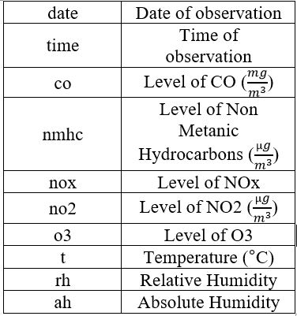

Corrolation between air quality and temperature

It seems that temperature does not have abigh impact on the air quality. However, apart from nox, levels of all other pollutant is slightly increase by increasing temperature.
Ramin Ala
This post consists of a bit of data clean up and exploratory analysis of a dataset available in University of californium, Irvine’s website.
The dataset includes 15 variables and 827 observations that represent air quality within an Italian city and in a significantly polluted area. level of CO, Non Metanic Hydrocarbons, Benzene, Total Nitrogen Oxides (NOx), and Nitrogen Dioxide (NO2) measured. Relative and absolute humidity are among variables.
This table shows important variables and their definition.

This dataset is available in the below link:
It seems that temperature does not have abigh impact on the air quality. However, apart from nox, levels of all other pollutant is slightly increase by increasing temperature.

There are different data for relative and absolute humidity. Note absolute humidity is the measure of water vapor (moisture) in the air, regardless of temperature. Relative humidity also measures water vapor but RELATIVE to the temperature of the air. Trend of change is interestingly to big extent like temperature.

This plot show the average pollution in terms of time of the day. There are two picks in the level of pollutuon. First, 8 Am and the second 7 pm. Both of these hours are rush hours with lots of traffic. General intuition has always been that there is least air pollution at night because there are fewer cars on the road and fewer factories humming at that time of day.
## Linear Regression Model Specification (regression)## Linear Regression Model Specification (regression)
##
## Computational engine: lm
## parsnip model object
##
## Fit time: 0ms
##
## Call:
## stats::lm(formula = nox ~ no2, data = data)
##
## Coefficients:
## (Intercept) no2
## 2202.6401 -0.7743## # A tibble: 2 x 5
## term estimate std.error statistic p.value
## <chr> <dbl> <dbl> <dbl> <dbl>
## 1 (Intercept) -2.13 14.8 -0.144 0.886
## 2 no2 0.756 0.00911 83.0 0